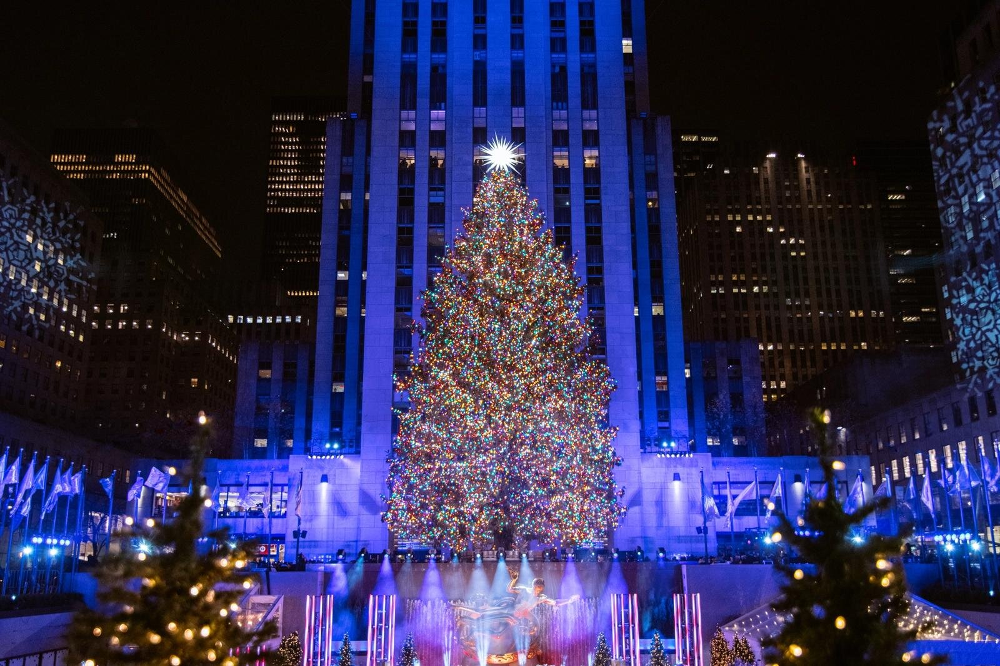

The heart of midtown Manhattan

Deine Tor um das Rockefeller Center
Welcome to the best experience of your life
Liebe Besucher,
sind Sie bereit fuer ihre magische Tour um das Rockefeller Center ?
Neben einer kuscheligen Decke für die Winterkälte gibt es auch kostenlose Getränke.
Selbstverständlich denken wir auch an die ganz kleinen Besucher und bieten ihnen höchsten Komfort mit Kindersitzen.
Die historisch geführte Tour durch das Rockefeller Center führt Sie von der Vergangenheit in die Gegenwart, von der ursprünglichen Vision von John D. Rockefeller Jr. bis zu ihrer Umsetzung im Kulturzentrum und National Historic Landmark von heute. Sie erhalten einen Einblick in die unglaubliche Architektur, Kunst, ikonischen Gebäude, Außengärten und Räume, die im gesamten Rockefeller Center zu finden sind.
Das Rockefeller Center beherbergt eine bemerkenswerte Sammlung von Art-déco-Motiven und Skulpturen, die die Entwicklung des Menschen in Geist, Wissenschaft, Industrie und mehr symbolisieren. Sie werden die berühmtesten Kunstwerke des Zentrums sehen, darunter Four Periods in Italian History, Atlas, Intelligence Awakening Mankind, Prometheus, Sound and Light und The Joy of Life und viele andere. Und nebenbei erfahren Sie, wie Rockefellers Vision, ein Kulturzentrum zu schaffen, letztendlich verwirklicht wurde.
Auf Ihrer Tour sehen Sie die bedeutendsten Gebäude, Gärten und Plätze des Rockefeller Center. Einige Höhepunkte sind Stopps am Associated Press Building und wo die TODAY Show gedreht wird. Bringen Sie bequeme Schuhe mit, es gibt viel zu sehen.
Vorherige Anmeldung erforderlich!
Reservieren sie jetzt und entdecken Sie das Rockefeller, wie noch nie zuvor.
Preise
|
Einzelfahrt Erwachsene:
|
25 Euro pro Stunde |
|
Partnerfahrt (max. 2 Personen):
|
45 Euro pro Stunde |
|
Einzelfahrt Behinderte:
|
20 Euro pro Stunde |
|
Einzelfahrt Kinder (5-12 Jahre):
|
20 Euro pro Stunde |
|
Familienfahrt (mind. 5 Personen):
|
20 Euro pro Stunde |
Öffnungszeiten
| Montag-Donnerstag: |
9-22 Uhr |
| An Feiertagen |
9-15 Uhr |
| Samstag-Sonntag: |
8-23 Uhr |
| Freitag: |
Ruhetag (keine Fahrten) |
Über uns
Was wir für Sie bieten:
- Kostenlose Getraenke
- Persoenlicher Guide
- Willkommensgeschenk
- Haltemoeglichkeit nach Wunsch
- Warme Decken
- Kinderbetreuung falls Paare alleine fahren
- Langjährige Erfahrung
- Moeglichkeit das Rockefeller Center hautnah zu entdecken
- Snacks gegen Aufpreis
Wir stehen ihnen jederzeit zur Verfügung!
Wir freuen uns auf Sie!
Wer wir sind
Unsere Profi-Guides sind :
Luke, Amber, Serena, Liam, Jiselle und Jaqueline
Ihre Zufriedenheit liegt uns am Herzen.